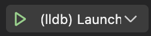
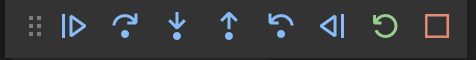

CBMC Proof Debugger
The CBMC Proof Debugger is a Visual Studio Code debugger for CBMC error traces.
CBMC is a model checker for C. CBMC will explore all possible paths through your code on all possible inputs, and will check that all assertions in your code are true. CBMC can also check for the possibility of security issues (like buffer overflow) and for instances of undefined behavior (like signed integer overflow). If CBMC finds a code issue, it generates an error trace demonstrating how that issue could occur. If CBMC terminates without finding any issues, the result is assurance that your code behaves as expected. CBMC is a bounded model checker, however, so getting CBMC to terminate may require restricting inputs to some bounded size, and CBMC's assurance is restricted to these bounded inputs.
CBMC Viewer is a tool that scans the output of CBMC and produces a browsable summary of its findings, making it easy to root cause the issues CBMC finds using any web browser. Viewer also produces a summary of its findings in the form of a collection of json blobs.
The CBMC Proof Debugger loads the json summaries produced by CBMC Viewer, and lets a developer explore the error traces produced by CBMC using the Visual Studio Code's debugger.
To get started, see our
- installation instructions and a
- simple demonstration of how to use the proof debugger.
References:
User guide
This is the start of a user guide for the CBMC Proof Debugger.
Installation
Install the debugger
Most people should install the debugger from within Visual Studio Code:
-
Click on the Extensions icon in the Activity Bar on the left.

-
Search for "CBMC Proof Debugger."
-
Click on "CBMC Proof Debugger."
-
Click on "Install."
For more information, read about installing extensions from the Extension Marketplace.
You can also install the debugger from the project release page:
- Open the release page.
- Download the package
cbmc-proof-debugger-*.vsixat the bottom of the page. - Run
code --install-extension cbmc-proof-debugger-*.vsixto install the package.
You can safely ignore the deprecation warning about the Buffer class.
Uninstall the debugger
To uninstall the debugger from within Visual Studio Code,
- click on the Extensions icon in the Activity Bar on the left,
- click on "CBMC Proof Debugger," and
- click on "Uninstall."
To uninstall the debugger from the command line, run
code --uninstall-extension model-checking.cbmc-proof-debugger
Configuration
To create a debugger configuration for the CBMC Proof Debugger, click on the Run and Debug icon
in the Activity Bar on the left.
-
If you have already configured some debuggers like lldb, you will see a drop-down list of configured debuggers

Expand the drop-down list, click on "Add Configuration," click on "CBMC Proof Debugger" in the list of available debuggers, and save the
launch.jsonconfiguration file. -
If you are configuring your first debugger, you will see the Run view

Click on "create a launch.json file" and select "CBMC Proof Debugger" from the list of available debuggers, and save the
launch.jsonconfiguration file.
For more information, read about launch configurations.
Demonstration
This is a simple demonstration of the CBMC Proof Debugger.
- Follow the CBMC installation instructions to install CBMC and CBMC-related tools.
- Follow the debugger installation instructions to add the debugger to Visual Studio Code.
- Clone the debugger code repository and change to the demo directory
This directory contains a simple project consisting of a Makefile and two source files foo.c and main.c.git clone https://github.com/model-checking/cbmc-proof-debugger cd cbmc-proof-debugger/demo - Run CBMC on the source code
This will runmakegoto-ccto compile the source code for CBMC, runcbmcto do bounded model checking on the source code with CBMC, and runcbmc-viewerto produce a browsable summary of the CBMC findings. - Just for fun, open the browsable summary in a web browser and look around.
On MacOS, do
Theopen report/html/index.htmlreportdirectory produced bycbmc-vieweractually contains two subdirectories:htmlcontains the browsable summary.jsoncontains some JSON files that are summaries of artifacts produced by CBMC.
Now let's run the debugger on the error traces produced by CBMC.
In the demo project directory:
-
Open Visual Studio Code.
code . -
Configure the debugger for this project using the configuration instructions.
-
Open the proof debugger console: At the bottom of the screen, click on the console name "Proof Debugger." (If you don't see any consoles at the bottom of the screen, click on "View -> Terminal" to make them visible.)
-
Load the error traces: On the right of the debugger console, click on "Load Traces," navigate to the folder
demo/report/jsonin the dialog window, and click on "Open." -
Select the trace you want to debug: Clicking on the failure description for the failure you want to debug. For example, under Line 3, click on "dereference failure: pointer NULL in *ptr."
-
Start the debugger: Click on the "debug and run" icon on the left, and select the "CBMC Proof Debugger" from the drop-down list of available debuggers at the top, and press the green "start" icon to the left of "CBMC Proof Debugger."
Now you can see the familiar debugger interface. In particular, you can see the debugger toolbar at the top of the screen.

The icons left-to-right are:
- Run forwards
- Step over forwards
- Step into function
- Step out of function
- Step over backwards
- Run backwards
- Restart the debugger
- Halt the debugger
For more information, read about debugging.
Now you can use the debugger interface to examine the program behavior determined by the error trace just as you would to examine the program behavior determined by a set of input values.
- You can run forward to run until the failure occurs, examine the program stack, and step forwards and backwards to examine the code leading up to the failure.
- You can set a break point and run forwards or backwards to a break point.
- You can examine data in any stack frame, any static variable, and any heap object by clicking in the data view on the left. In particular, for structured data like strings, arrays, and structs, you can click on a value to open it up and expose data components.
Developer guide
This is the start of a developer guide for the CBMC Proof Debugger.
Installation
Clone the debugger code repository with
git clone https://github.com/model-checking/cbmc-proof-debugger
cd cbmc-proof-debugger
Install Node.js and all TypeScript/JavaScript dependencies with
make setup-macos
or
make setup-ubuntu
depending on your operating system and package management tools.
On other platforms, you can download a Node.js installer for your platform from the Node.js download page, and the remaining setup steps in the Makefile should work. If you learn how to build and install this package on your platform, please submit a pull request to contribute your instructions.
From this point, the following targets will be helpful
make packagebuilds the extension package.make installinstalls the extension package into Visual Studio Code.make publishpublishes the extension package to the Extension Marketplace.make formatruns the TypeScript formatter to standardize formatting.
Architecture
This is a description of the debugger architecture in Visual Studio Code.
Debugger overview
Visual Studio Code implements a generic user interface to debuggers. A developer needs to learn only one user interface to use any debugger supported by VS Code. For example, using the debug toolbar

a developer can run the program to a breakpoint, step over a function call, step into a function call, step out of a function call, restart the program, and stop the program. Adding a new debugger to VS Code involves writing a new VS Code extension that tells VS Code how to drive the debugger.
The debugging architecture of Visual Studio Code is described in the Debugger Extension guide. In this architecture, a debug adapter sits between VS Code and the debugger.

The role of the debug adapter is to receive a request from VS Code, to drive or interrogate the debugger on behalf of VS Code, and to send an appropriate response back to VS Code. The debug adapter also sends events to VS Code when certain events happen within the debugger (for example, when the debugger comes to a stopping point).
VS Code communicates with the debug adapter using the Debug Adapter Protocol. The protocol specification defines the set of requests, responses, and event notifications sent between VS Code and the debug adapter. The protocol overview gives a nice example of a sequence of requests and events that might be sent between VS Code and a debug adapter for gdb:

Debugger documentation
The user documentation is the place to start if you are unfamiliar with Visual Studio Code. The user guide introduces the basic concepts like editing and debugging. Most important are
- The debug actions that a software developer uses to interact with a debugger.
- The debug configuration that a software developer uses to select a debugger.
The developer documentation is the place for extension developers to start. Most important is
- The debugger extension overview gives a fairly complete example of how to write and package a debugger extension. The code repository used in that example was the starting point for this debugger.
You should now be able to read the code implementing this debugger, but you will eventually want to skim
-
The Extension Guides that describe the Visual Studio Code Extension APIs. This debugger uses
- Tree Views to display the code issues having traces available for debugging.
-
The UX Guidelines that describe the Visual Studio Code user interface. This debugger uses
- Views as containers of the content that appears in sidebars and panels,
- Sidebars and Panels to display views, and
- Notifications to display progress and error messages.
Implementation
This is an overview of the objects in the implementation and the source files that define these objects.
Values
A value can be a string, a number, a struct, or an array. A value can appear in a trace or be stored in memory. A value is represented in CBMC output as a string that must be parsed.
- value.ts: Defines the Value class and subclasses for strings, number, structs, and arrays.
- valueLexer.ts: A lexer for values in CBMC output.
- valueParser.ts: A parser for values in CBMC output.
Variables
A variable in a trace is a string like 'foo.bar[0]` consisting of a base name 'foo' followed by a list of selectors like field member selection '.bar' or array indexing '[0]'. We model memory as a single struct, so 'foo.bar[0]' is modeled as 'MEMORY.foo.bar[0]'. We think of '.foo.bar[0]' as a path through memory, where path elements denote field selection and array indexing. A variable is represented in CBMC output as a string that must be parsed.
- variable.ts: Defines the Element class and subclasses for field selection and array indexing.
- variableLexer.ts: A lexer for variables in CBMC output.
- variableParser.ts: A parser for variables in CBMC output.
Failures
A panel at the bottom of the screen displays the set of failures that can be debugged. The failures are organized into a tree and displayed as nested lists of files, functions within a file, lines within a function, and failures at a line. The debug extension describes this tree to Visual Studio Code using the Tree View API. The key to the Tree View is the TreeDataProvider interface that includes functions like getChildren(node) returning a node's children and getTreeItem(node) returning a node's contents. So the debug extension must load the failures available for debugging, organize them into a tree, and use the tree to implement the TreeDataProvider interface.
- traceData.ts: The method create(result, property, loop) loads the summaries produced by cbmc-viewer and returns a mapping file_name -> function_name -> line_number -> failure.
- traceTree.ts: The method create(mapping) transforms a failure mapping into a failure tree.
- traceView.ts: The class TraceProvider implements the TreeDataProvider.
Debug adapter
The debug adapter sits between Visual Studio Code and the debugger. The job of the debug adapter is to accept requests from Visual Studio Code like "set breakpoint" and "run" and to generate responses after driving the debugger and inspecting its state.
Visual Studio Code and the debug adapter communicate via requests and responses defined by the Debug Adapter Protocol. Visual Studio Code sends the SetBreakpointsRequest to the debug adapter which sends a SetBreakpointsResponse back to Visual Studio Code.
The class ProofDebuggerSession implements the DebugSession interface. It maintains the state of the debug adapter for one debugging session, and it implements methods like setBreakPointsRequest that Visual Studio Code can use to send the SetBreakpointsRequest and receive the SetBreapointsRepsonse.
How the debug adapter and the debugger communicate is of no concern to Visual Studio Code. In our case, the debugger is really just a trace simulator. The debug adaptor uses methods in the simulator interface to move the simulator forwards and backwards in the trace, and to examine the current state of the trace.
- adapter.ts: Defines ProofDebuggerSession implementing the DebugSession interface.
Debugger
- simulator.ts: Simulator is the debugger being managed by the debug adpater
- simulatorState.ts: A state of a trace being simulated by the simulator
- simulatorTrace.ts: A trace being simulated by the simulator (and methods to load the trace)
Extension activation
- extension.ts: Methods to activate and deactive the debugger extension.
Extension utilities
- constants.ts: Defines string constants used in the extension
- exceptions.ts: Defines an exception raised by the extension
- storage.ts: Defines methods to access the persistent storage available to the extension
Frequently asked questions
If you have a question that is not answered here, please file an issue with your question.